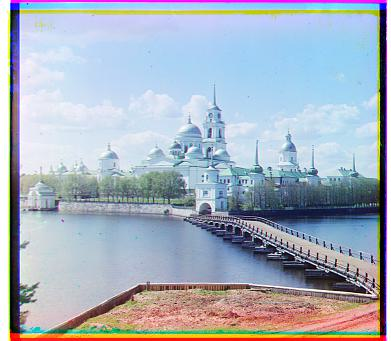
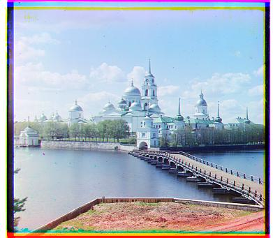
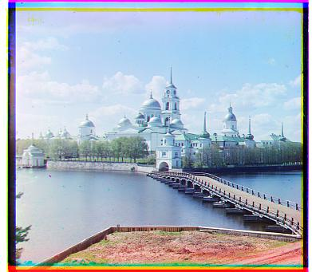

Sergei Mikhailovich Prokudin-Gorskii (1863-1944) was a man well ahead of his time. Convinced, as early as 1907, that color photography was the wave of the future, he won Tzar's special permission to travel across the vast Russian Empire and take color photographs of everything he saw including the only color portrait of Leo Tolstoy. And he really photographed everything: people, buildings, landscapes, railroads, bridges... thousands of color pictures! His idea was simple: record three exposures of every scene onto a glass plate using a red, a green, and a blue filter. His RGB glass plate negatives, capturing the last years of the Russian Empire, survived and were purchased in 1948 by the Library of Congress. The LoC has recently digitized the negatives and made them available on-line. This project takes those negative and tries to make a colored picture using single-scale and recursive algorithms to align all three images from LoC collection. (All images are downscaled to process on the page.)
Here is the example of initial image:
For the simple implementation I initially tried to align images without cropping them. It kept being slightly wrong, which, I believe, is because of the black borders. So I ended up implementing crop_borders function and adding it straight to the align function. To check the closeness between images I used normalized cross-corellation. It is in a separate function called normalized_cross_correlation My align crops small part of the blue image that we are trying to align to. It then loops through the x and y coordinates, rolling the source image(red/green image) pixels(represented as floats). Meaning I initially roll the float, and then crop it, making it look like I am moving the cropped porion. In fact I roll pixels(rm the last pixels on height and width and then add them at the front). That is also on of the reasons why not cropping did not work in my case. For the pyramid implementation I used the same align function, creating the function called align_pyramid. It is recursive, and starts from the bottom. Level 1 does the approximately 400x400 rescaled picture. It then gets cropped in align. Then every level starts from shifting the source into the best shift suggested from the previous level.

Church: Green: (25, 4), Red: (58, -4)
Harvesters: Green: (60, 17), Red: (124, 14)
Icon: Green: (41, 17), Red: (89, 23)
Lady: Green: (55, 9), Red: (117, 12)
Melons: Green: (81, 10), Red: (178, 13)
Onion church: Green: (51, 27), Red: (108, 36)
sculpture: Green: (33, -11), Red: (140, -27)
Self portrait: Green: (79, 29), Red: (176, 37)
Train: Green: (43, 6), Red: (87, 32)
Three generations: Green: (53, 14), Red: (111, 11)
Emir: Green: (49, 24), Red: (103, 57)